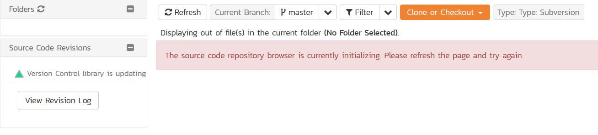
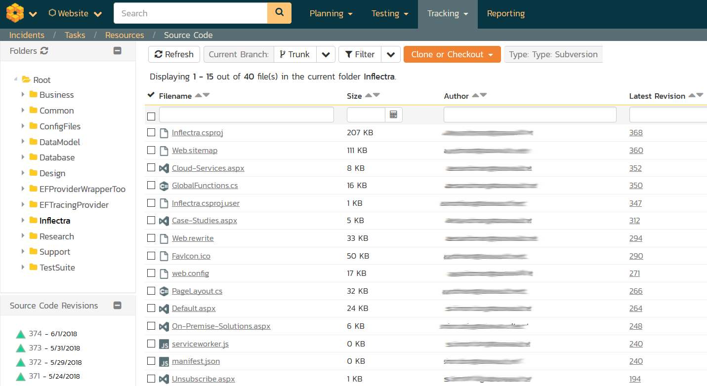
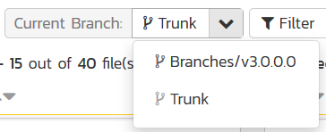
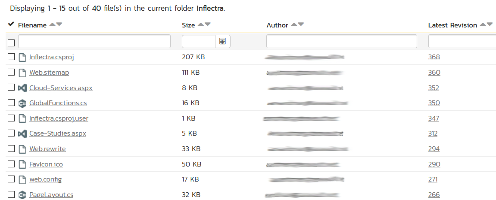
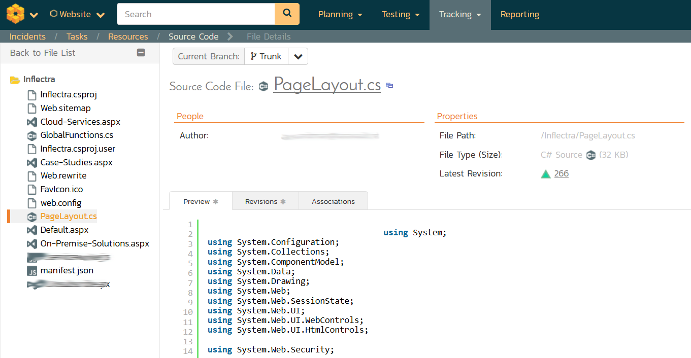
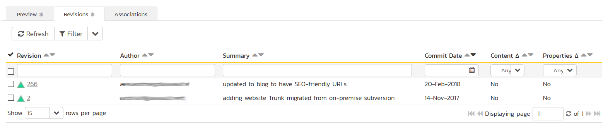

Using Subversion
Subversion is a version control system (VCS) -- also known as a revision control system (RCS). That is, Subversion manages files and directories, and the changes made to them, over time. This allows you to recover older versions of your data or examine the history of how your data changed.
Some version control systems are also software configuration management (SCM) systems. These systems are specifically tailored to manage trees of source code and have many features that are specific to software development---such as natively understanding programming languages, or supplying tools for building software. Subversion, however, is not one of these systems. It is a general system that can be used to manage any collection of files, though it is often used for SCM, handling source code files
Repository Layout
Before we get started with using Subversion, we need to discuss the standard folder layout. For TaraVault to display its branches, folders, files and revisions correctly in Spira you need to follow this layout for all your Subversion projects:

These three concepts are explained below:
-
Trunk is the main folder containing all the data. This is the main line of current development for the project.
-
A Branch contains copy of the trunk files and directories. These are used to denote older or non-primary versions of the Trunk. You may still commit changes into these branches. For example you may be still fixing bugs on an older version whilst primary development is occurring on the latest version.
-
Tags can also be referred as milestone. This is a check-point to indicate that your project has reached a certain point. You can use this to mark various releases. Unlike a branch, you cannot commit changes into a tag.
An example setup for such a project could look like:

The same folders and files are typically stored inside each of the Branches, Tags and the Trunk. We shall illustrate this more closely when we get started in the next section.
Getting Started with Subversion
This section assumes that you have already provisioned at least one Subversion project in TaraVault following the steps in Activating TaraVault and Provisioning Projects & Users. So you should now have a TaraVault user/password and a Subversion project with a connection URL:

The next step is to actually connect to this repository using a Subversion client and commit some source code. We recommend using a GUI tool such as TortoiseSVN but you can use any standard Subversion client with TaraVault (command-line or GUI-based) just as well. In our examples we shall be using TortoiseSVN.
The first thing we need to do is perform an initial 'check-out' of our repository into a new working folder (that will initially be empty).
Assuming that you have already installed TortoiseSVN, you would now create a folder to hold all of your Subversion projects (in our example we shall use C:\Temp\Subversion) and right-click and choose TortoiseSVN > Check Out:

The following dialog box will appear:

You need to enter the following:
-
URL of repository -- needs to be the TaraVault connection string listed under 'My Profile' for the current project.
-
Checkout Directory -- needs to be the local name of the folder for this project. Typically it is best to make it the same as the name of the project in TaraVault (e.g. C:\Temp\Subversion\libraryinformationsystem in this example)
When you click on the 'OK' button, the following authentication dialog
box will appear:

Enter your TaraVault username/password, choose 'Save authentication' and then click 'OK'. You will now get a folder C:\Temp\Subversion\libraryinformationsystem that is completely empty apart from a special _svn (or .svn) folder that is used by TortoiseSVN internally.
Now that you have your Subversion working folder downloaded, you should add the following three folders right now:
-
Trunk
-
Branches
-
Tags
Once you have added them to Windows Explorer, select them all and choose TortoiseSVN > Add:

This will display the following:

Once they are added, then choose TortoiseSVN > Commit to commit these folders to the TaraVault repository. That will display the following dialog box:

Typically you should add a message to describe what you did. Then click 'OK' and the three layout folders will now be added to your TaraVault subversion repository.
Adding Files to the Trunk
Now that you have your Subversion repository layout setup, we shall simulate working on a real project. You can now copy some code and folders into the Trunk top-level folder for your project. In this example we shall add some sample Inflectra code:

Select all the files and folders and choose TortoiseSVN > Add, then after adding the files and folders, choose TortoiseSVN > Commit to add these files to the repository.

Now, open up one of the files (we shall modify the SampleTestSuite\AssemblyInfo.cs file in our example) and make a change to it. Then right-click on Trunk and choose TortoiseSVN > Commit to commit the change. Make sure you add a comment:

Click OK and the change (known as a revision) will now be committed into TaraVault.
Branching and Tagging
Now that we have the primary development line in our Trunk, we can branch and tag a specific version of the code before we make other changes. For example we might be releasing a version and then making changes specific only to the next version.
We shall create both a branch and a tag from the current Trunk. Firstly, to create a Branch, right-click on Trunk and choose TortoiseSVN > Branch/Tag:

Change the 'To path' from /Trunk to /Branches/v2.0.0.0. You can either branch the latest revision (called the HEAD revision) or a specific revision:

We also recommend adding a 'Log message' to describe the purpose of making the branch. Once you are happy with your choice, click 'OK' to confirm the branch. Once that is done, a copy of the Trunk will now be available under the Branches/v2.0.0.0 folder. To see this, right-click on Branches and choose TortoiseSVN > Update:

Similarly, to make a Tag, right-click on Trunk and choose TortoiseSVN > Branch/Tag, and change the 'To path' from /Trunk to /Tags/v1.0.0.0:

Once that has been completed, right-click on the Tags folder and choose TortoiseSVN > Update:

The main difference between a Branch and a Tag is that you can continue to make changes on a Branch, whereas a Tag is a fixed snapshot of the Trunk and cannot be modified. To illustrate this, let's simulate making a bug fix on the v2.0 branch we made. To do that, change one of the files in the /Branches/v1.0.0.0 folder structure and then right-click TortoiseSVN > Commit:

Click 'OK' and we are now ready to view the repository within Spira.
Viewing within Spira
In addition to being able to browse the source code repository in Spira, which is itself very useful, the real strength comes from linking artifacts in Spira - including Incidents, Requirements, and Tasks - to revisions checked into the software repository, indicating what was fixed or implemented in a specific revision.
Firstly, you can view the source code tree by selecting the Tracking > Source Code link under the main Spira menu. This will display the following:

This is normal, it means simply that the source code viewer is initializing for initial use. Whenever you access a TaraVault project for the first time you will see this. After a few minutes it will be ready for use and you can refresh the page to display:

The folder tree of the repository is on the left, and files in the current selected directory will be listed in the right table. Note that this view will always show the current (HEAD) revision of the repository.
Also note that the page will display the folders and files for the currently selected branch (in the example above "Trunk"), you can change the current branch at any time by selecting it from the dropdown menu:

The file grid will display the filename, the current revision number of the file, the author of the last commit, and the date of the last commit. You can filter and sort on any of the columns, as well:

To view the file details, click on a file hyperlink in the grid. The file details page displays the details on the selected file. By default, it will be the HEAD revision, unless you clicked to view the file details from a specific revision. By clicking on the file name, you can download the specified revision of the file to your local machine. This does not do an Subversion checkout; you are merely downloading the file to your local machine.

Underneath the file details are tabs that show a preview of the file
(with syntax highlighting), a list of all the revisions that this file
belongs in, or was committed to, who performed the commit, and the log
message for the commit, and a tab that shows any artifact associations.
Throughout SpiraTeam, revisions are indicated by the

icon:

By clicking on a revision in SpiraTeam, you will be taken to the revision details page.

The revision details screen shows the log for the Commit, the commit date and author. At the bottom of the page are two tabs, Files and Associations. The Files tab lists all files that were a part of this commit, with their full path and the action that was performed on them for this commit. Possible values are Added, Modified, or Deleted.
The Associations tab shows any artifact (Incident, Task, Requirement, Test Case, Test Set, etc.) that the log message references. See the next section for information on how to link a revision with a Subversion Commit:

Linking Artifacts
Linking an artifact is quite simple. To maintain the readability of Subversion's commit messages, we adopted a bracket token. The token is in the format of:
[<artifact identifier>:<artifact id>]
The first half, the Artifact Identifier, is a two-letter code that is used throughout SpiraTeam, and is visible on almost every page in the application. For example, a requirement's identifier is "RQ". Incidents are "IN", and test cases are "TC". The artifact ID is the number of the artifact. So by creating a commit message that reads:
SpiraTeam will automatically detect tokens and will include links to them under the Associations tab for a revision detail. If you forget to add the association during the commit, you can use the 'Add Association' option within SpiraTeam to add the association after the fact. This is described in more detail in the SpiraTeam User Manual.